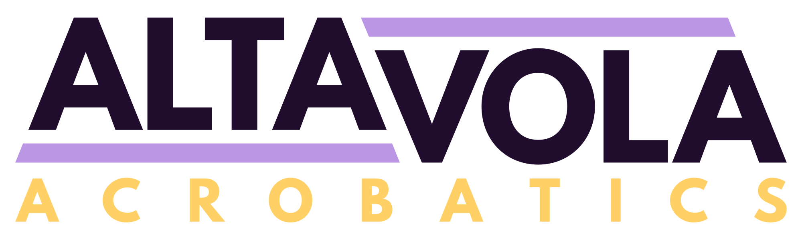
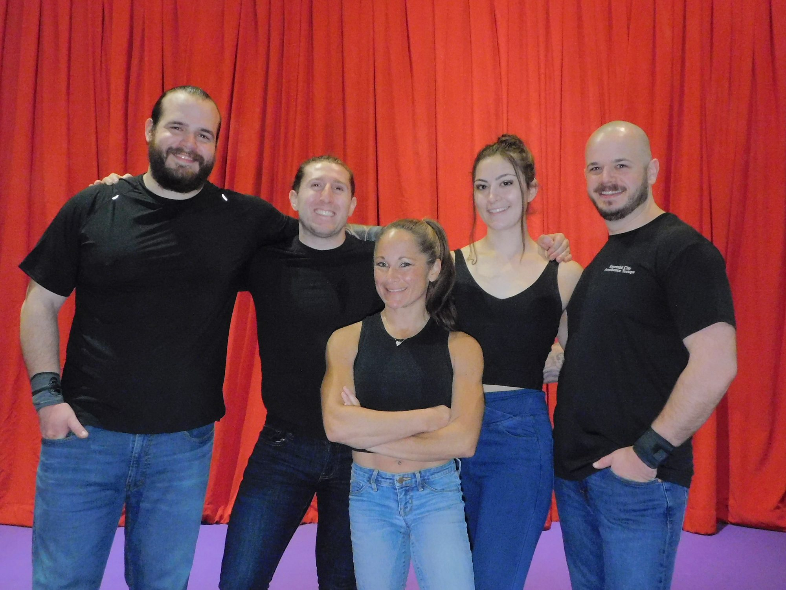
Alta Vola Acrobatics is a troupe of 5 artists who specialize in both partner and group acrobatics. Skills that are featured by this group include hand-to-hand, columns (two- and three-highs), banquine arts, swings, pitching, and more. The performances by Alta Vola are fueled by mutual trust, communication, and a love for the sport — get to know who's behind the lifts, throws, and stacks:
Lisa Bregman is a Seattle-based circus artist specializing in standing partner acrobatics, with an expanding focus on aerial disciplines, including duo trapeze and lyra. With roots in gymnastics and college cheerleading, she brings dynamic skills, strong partnerships, and playful musicality to her performances, and lives for the moments in the air, flipping, flying, and finding flow in motion. A latecomer to circus, Lisa began training less than five years ago and now performs regularly while also teaching workshops and sharing her work at festivals, embracing circus as a creative, collaborative return to her childhood gymnastics and musical theatre roots.
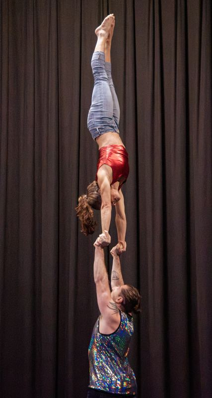
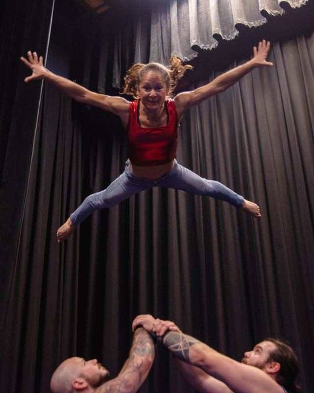
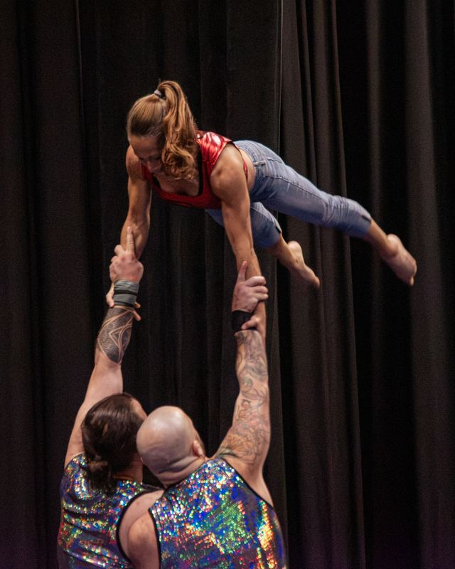
Aslan DaVault is a Seattle-based partner acrobat and movement artist. With a long-standing passion for movement, dabbling in parkour, tricking, and calisthenics, Aslan has most recently spent the past three years performing partner and group acrobatics. Now working as a freelance circus artist, Aslan focuses on creating grounded, dynamic performances that highlight clean movement and strong partnerships. Outside of performing, Aslan is also a sports performance trainer and back in school to become a physical therapist, a role that keeps him deeply connected to the body, movement, and longevity.
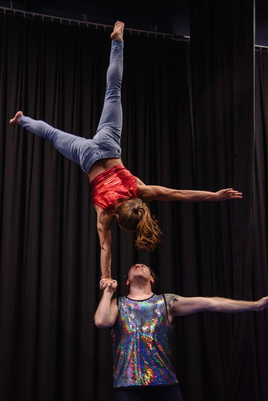
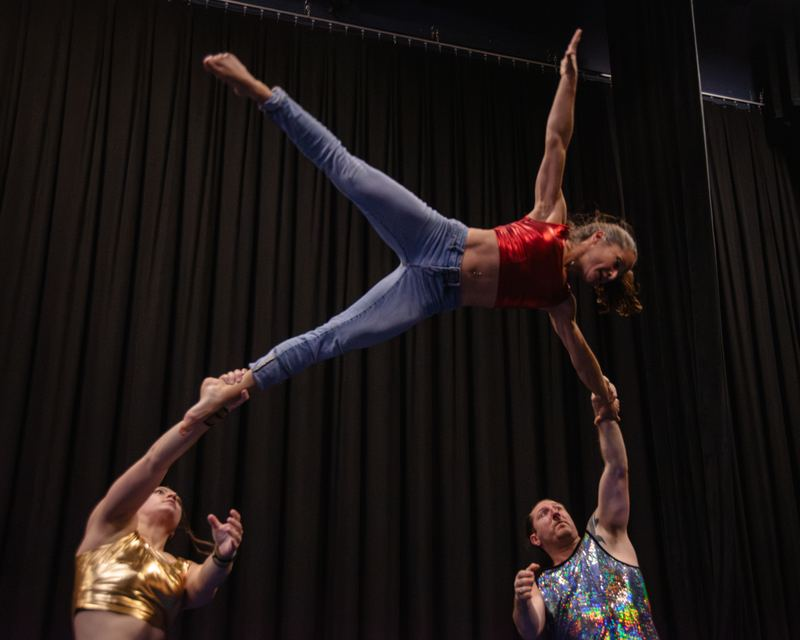
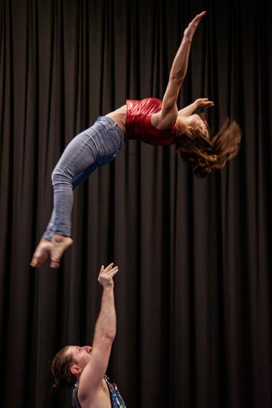
Megan Gialluca is a Seattle-based circus performer focused primarily on partner and group acrobatics, with a secondary interest in aerial lyra. Building on her background in women's gymnastics, Megan is a generalist in acrobatics, capable of performing both the role of a base and a flyer at an advanced level. In her daily life, Megan holds a doctorate in astronomy and astrobiology, and serves as a postdoctoral research scientist.
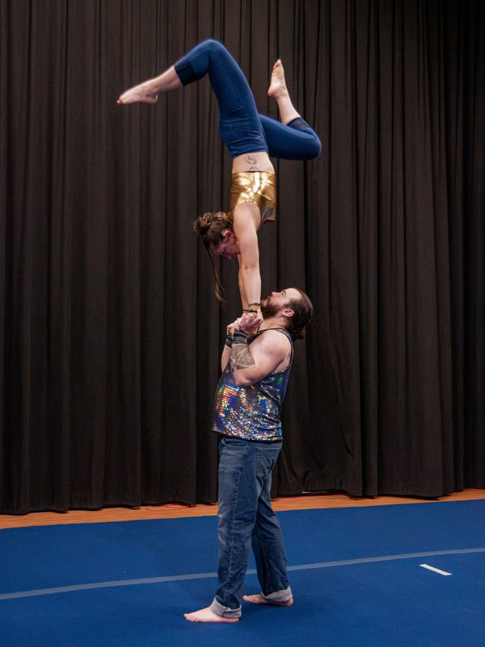
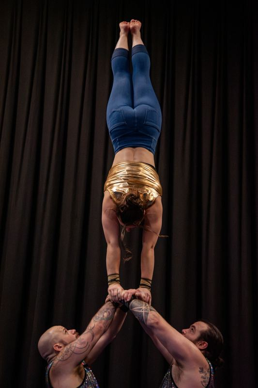
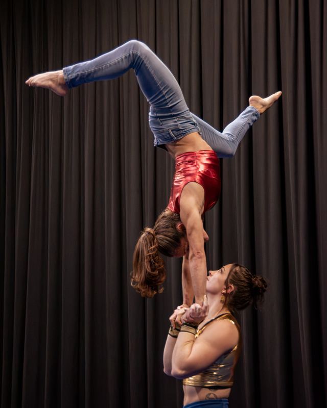
Ty McSilva is a Seattle-based circus artist who started circus arts with Gamma Phi Circus in 2009, performing with the troupe through 2013 as a clown, acro, teeterboard and Russian swing acts. After a decade away, Ty picked acro back up and hasn't looked back since, performing in multiple SANCA showcases as well as The Day The Music Died 2. When he’s not training and performing, Ty serves as co-president of the board of directors of SANCA.
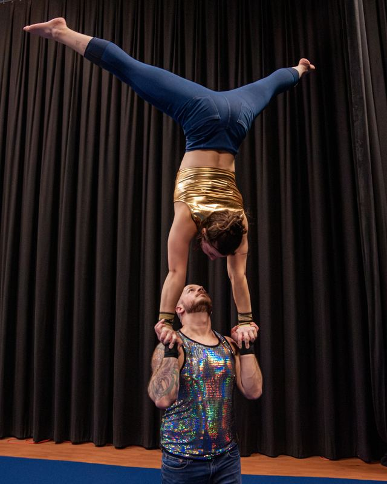
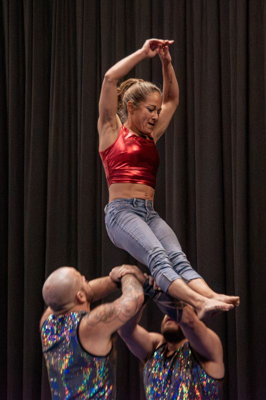
Kenny Wells is a Seattle-based circus performer specializing in group and duo acrobatics. As a base, he brings reliability, stability, and a can-do attitude to his troupe. With roots in Cascade Youth Circus and a background in competitive gymnastics, cheerleading, and diving, he builds on a strong foundation in acrobatics. For the past year, he has focused on group and duo work, and by day, he works as an engineer in robotics.
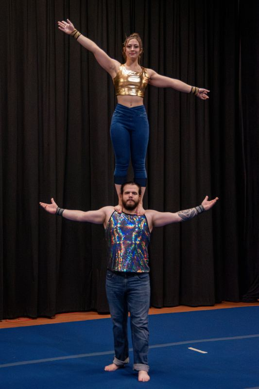
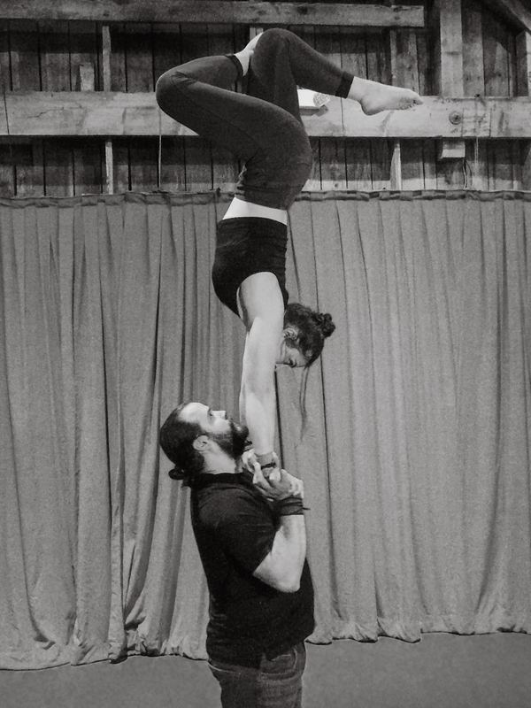
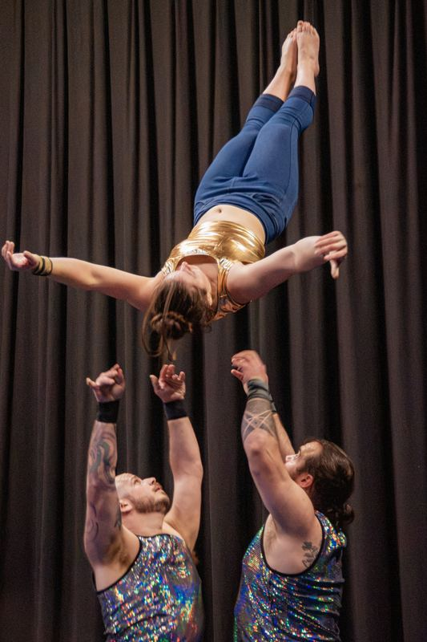